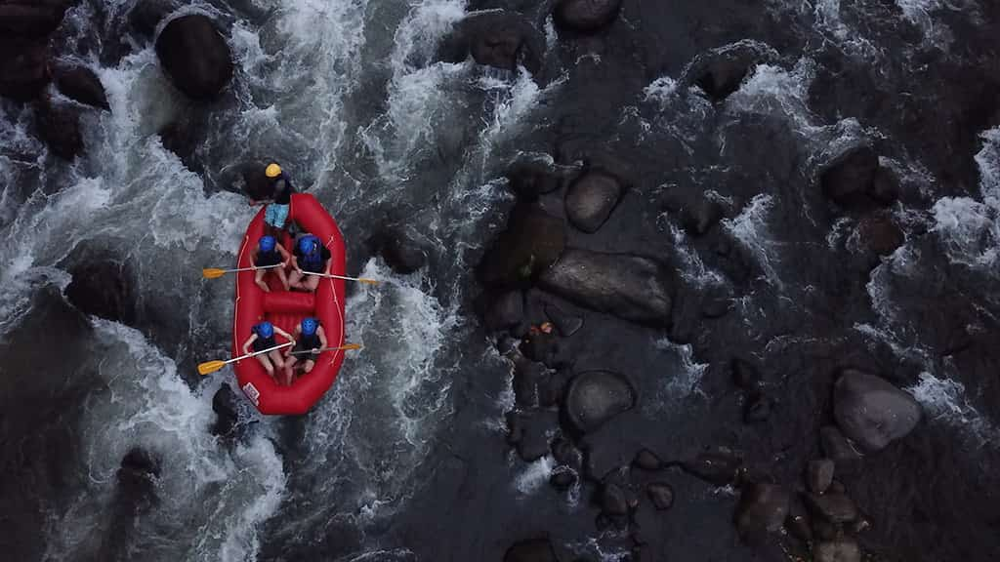
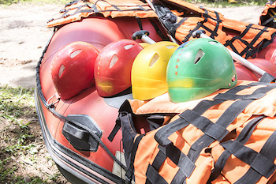

Exciting Expeditions Rafting

Get ready to experience the rush of roaring rapids, breathtaking canyon views,
and unforgettable
outdoor adventure. At Exciting Expeditions Rafting, every trip is designed to
bring
excitement,
laughter, and memories that last a lifetime.
Adventure starts the moment you push off from shore and the river is calling.
History
Founded in 1998 along the rugged banks of the Salt River, Exciting Expeditions
Rafting began with a
single raft, a passion for adventure, and a mission to share the thrill of white
water with others.
Over the years, we have guided thousands of guests through
roaring
rapids, calm scenic
stretches, and hidden canyon waterways.

From first-time rafters to seasoned
cruisers,
families and adventure lovers have returned year after year to
experience the
excitement and natural beauty of the river.
Today, we continue to combine adventure, professionalism,
and a deep respect
for the outdoors, creating memories that last long after the river ride ends.